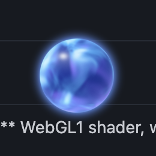
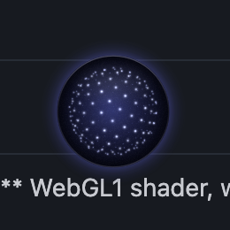
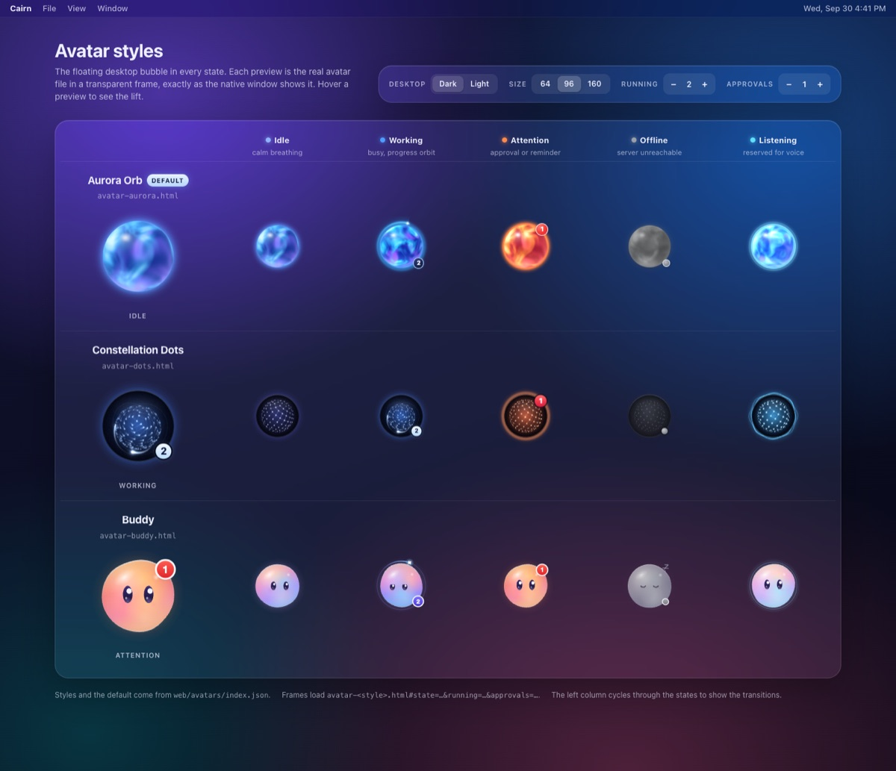
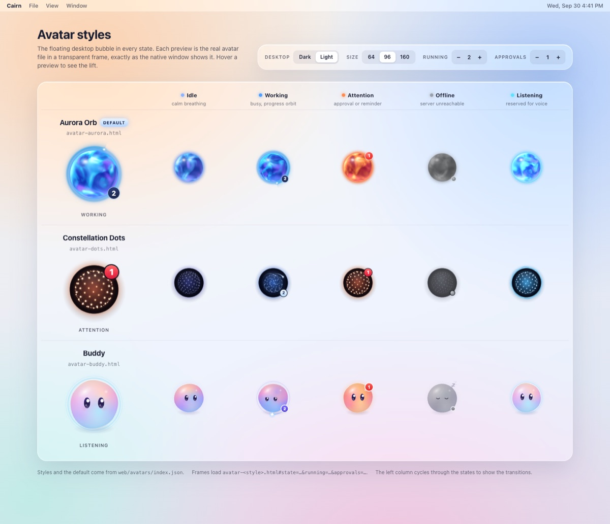
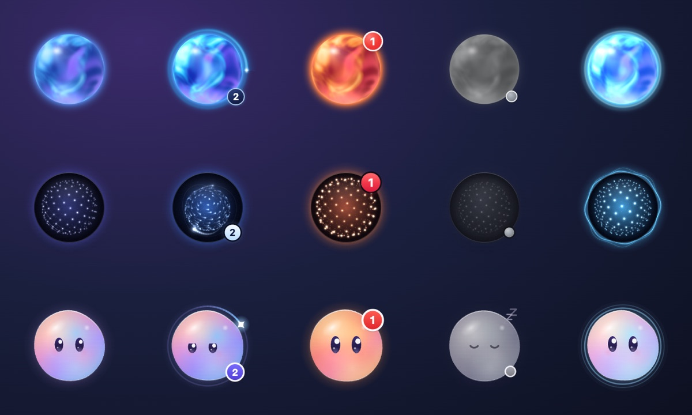
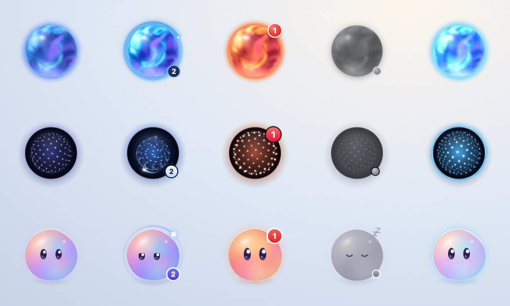
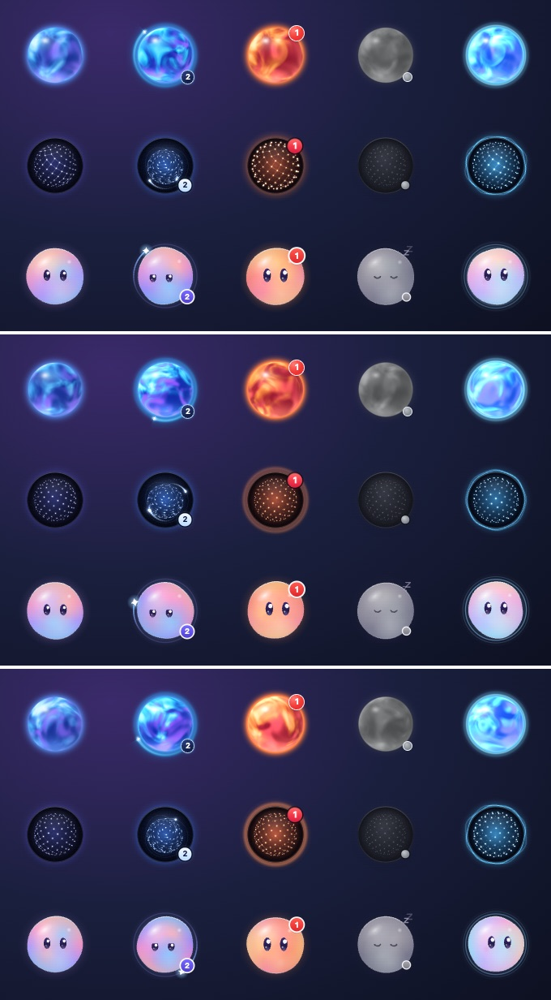
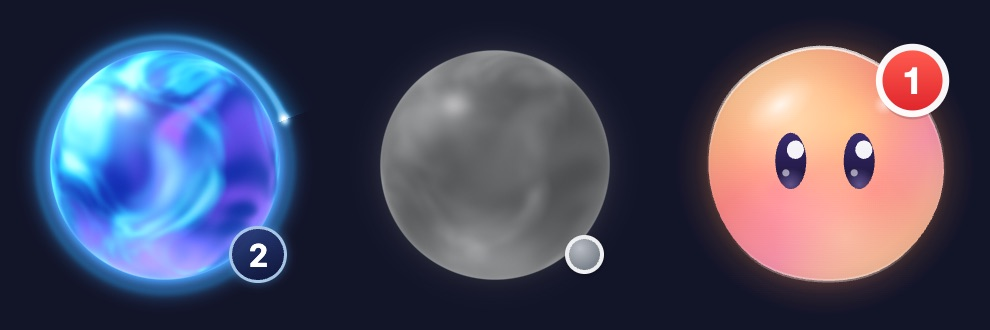

Floating bubble app
Cairn.app is a small native macOS app (AppKit + WebKit, one Swift file) that puts Cairn Assistant on your desktop as a small animated avatar in an 88×88 window. There are three styles to choose from. The avatar floats above other windows on every Space and can be dragged anywhere. Click it, or Cairn's Dock icon, to open a chat panel. The app makes sure the Cairn server is running, and the avatar shows at a glance whether Cairn is idle, working, waiting for you or offline. If the server crashes, the app restarts it.
node bin/cairn.js desktop --install builds the app, installs it as /Applications/Cairn.app, keeps it in the Dock and starts it. From then on, start Cairn whenever you need it from the Dock, Spotlight (⌘Space › Cairn), the Apps view (Launchpad) or the Applications folder. See Install & launch and Dock icon and menu bar.- What it looks like
- Avatars and states (live state gallery, screenshots)
- Behaviours
- Dock icon and menu bar (Dock menu, badge, Show in Dock, menu bar, pinning)
- Status indicators
- Launch lifecycle
- Health polling and watchdog
- Click vs drag
- Native ↔ web bridge
- Always on: what keeps running when
- Start at Login
- Install & launch (starting it, updating)
- Build and run
- Where state lives
- Troubleshooting
- Uninstall
1. What it looks like
By default the bubble sits in the top-right corner of your main screen, 16 px inside the visible area (below the menu bar). The chat panel opens next to it and flips sides to stay on screen. The mock-up shows the Classic Bubble style. The animated avatars that replace it by default are shown below.
A mock-up, not a screenshot, of the Classic Bubble: a stack of stones (a cairn) drawn with NSBezierPath, with a ring that animates while runningRuns > 0. An animated avatar draws the same signals itself: activity while working and a red badge for approvals.
The same layout as ASCII, for terminals and plain-text notes:
┌──────────────────────────────────────────────── menu bar ──┐
│ ╭────╮ ●1│ ← avatar window 88×88, 16 px inset
│ │ ◉ │ │ working = runs in progress
│ ╰────╯ │ badge = approvals waiting
│ ┌─────────────────────────────────┐ │
│ │ ▲ Cairn ● ＋ ⌂ – │ │ ← header (drag to move panel)
│ │ Chat │ Activity │ Tasks │ Shop │ …│ │
│ │ Shop for a vacuum… ▸ │ │
│ │ ◂ 🔎 Searching… 🌐 navigate │ │
│ │ ┌ Approval needed ────────────┐ │ │
│ │ │ Click "Add to cart" │ │ │
│ │ │ [Approve] [Deny] [Always] │ │ │
│ │ └─────────────────────────────┘ │ │
│ │ [ Ask Cairn… ] [➤] │ │ ← 400×620 panel, WKWebView
│ └─────────────────────────────────┘ │
└─────────────────────────────────────────────────────────────┘2. Avatars and states
The bubble is an animated avatar. Each style is an ordinary web page in web/avatars/ that draws on a transparent canvas. The app shows it in a transparent WKWebView inside an 88×88 borderless window, so only the avatar itself is visible on your desktop. A transparent overlay view above the web view handles every click, drag, hover and right-click, so the avatar page never receives mouse events. build.sh copies the pages into Cairn.app/Contents/Resources/avatars, and the app loads them from there as local files. The avatar therefore keeps animating (in the offline state) while the server is down.
| Style | File | Look | Renderer |
|---|---|---|---|
| Aurora Orb | web/avatars/avatar-aurora.html | A glass sphere filled with slowly flowing blue, cyan and violet clouds, with rim light and a soft glow. Comets orbit it while it works, one per running task, up to three. | WebGL, with a 2D canvas fallback |
| Constellation Dots | web/avatars/avatar-dots.html | A tilted disc of glowing points around a soft core. It breathes when idle, swirls with trailing comets while it works, turns warm orange with a wave when it needs you, and fades to grey when offline. | 2D canvas |
| Buddy | web/avatars/avatar-buddy.html | A glossy, friendly blob with eyes. It focuses with a spinning ring while it works, opens its eyes wide and glows orange when it needs you, and sleeps (with a "z") when offline. | 2D canvas |
| Classic Bubble | native, in CairnBubble.swift | The original gradient circle with a stacked-stones glyph, progress ring and badge, drawn with Core Animation | AppKit. It is also the automatic fallback when an avatar page fails to load. |
Choosing a style: right-click the bubble → Avatar and pick one. The current style has a checkmark, and the default is marked (default). The choice is saved in UserDefaults (CairnAvatarStyle) and applies straight away without a restart. The styles, their names and the default come from web/avatars/index.json ({default, styles:[{key, file, name}]}). The shipped file lists aurora (the default), dots and buddy. Without a valid index.json, every avatar-*.html in the folder is offered, named after its file, with the first one alphabetically as the default. Classic Bubble is always the last entry. To add a style, drop an avatar-<key>.html that implements window.cairnAvatar.setState into the folder, list it in index.json, and rebuild.
Right-click ▸ Avatar ▸ ✓ Aurora Orb (default)
Constellation Dots
Buddy
─────────────
Classic Bubble
$ defaults write com.cairn.bubble CairnAvatarStyle buddy # same choice from the terminal (keys from index.json)How health maps to the avatar's state
Every 3 seconds the app polls GET /api/assistant/health. It then calls window.cairnAvatar.setState(state, {running, approvals}) on the avatar page. The first matching rule wins:
| # | State | When | What you see |
|---|---|---|---|
| 1 | offline | The health request failed (server starting, crashed or unreachable) | The avatar dims and goes still, with a small grey dot (the Classic Bubble shows an amber dot) |
| 2 | attention | pendingApprovals > 0, or an attention message (a reminder fired, or an approval arrived) in the last 10 s | A pulse and a red badge with the number of approvals |
| 3 | working | runningRuns > 0. This count includes runs waiting for approval. | Faster motion, orbiting activity, and a small counter when two or more runs are active |
| 4 | listening | The chat panel is open | Brighter, with ripples, as if listening |
| 5 | idle | Otherwise | Slow, calm motion |
flowchart TD
P["Every 3 s: GET /api/assistant/health"] --> R{"Reachable?"}
R -->|no| OFF["offline
dimmed, grey dot"]
R -->|yes| A{"pendingApprovals > 0
or attention in last 10 s?"}
A -->|yes| ATT["attention
pulse, red badge = approvals"]
A -->|no| W{"runningRuns > 0?"}
W -->|yes| WRK["working
activity, counter if 2 or more"]
W -->|no| L{"Chat panel open?"}
L -->|yes| LIS["listening"]
L -->|no| IDL["idle"]
OFF --> S["window.cairnAvatar.setState(state, running, approvals)"]
ATT --> S
WRK --> S
LIS --> S
IDL --> S
The avatar page draws its own badge, counter and offline dot. The native ring, badge and dot are used only while no avatar page is loaded (Classic Bubble or fallback). If the avatar's web content process crashes, the app reloads the page.
Every avatar page also accepts the state in its URL hash, which is how the gallery below and the avatar gallery preview them: avatar-aurora.html#state=working&running=2, #state=attention&approvals=1, #state=offline.
Live state gallery
These are the real avatar pages, running live in this page, one row per state.
| State | Aurora Orb | Constellation Dots | Buddy |
|---|---|---|---|
idlenothing running |
|||
working2 runs active |
|||
attention1 approval waiting |
|||
listeningchat panel open |
|||
offlineserver unreachable |
If the cells are empty, open this page from the project folder (for example python3 -m http.server --directory . in the project root, then /docs/desktop.html) or open the avatar gallery directly.
Screenshots
Captures of the running app on the desktop, one per avatar style. The bubble window is transparent, so whatever is behind it (here a dark editor window) shows through around the avatar. Click any image to open it full size.





offline: grey, eyes closed, a "z" and the status dot. It went back to normal by itself once the server was reachable again.The avatar state sheets below come from the avatar review. Each one shows the real avatar pages in transparent frames, as the native window shows them, with running=2 and approvals=1 where relevant.


web/avatars/gallery.html, 96 px). One row per style, one column per state: idle, working, attention, offline and listening. The large left column cycles through the states to show the transitions.









working (2), the status dot on offline, and the red approval badge on attention (1). Each avatar page draws these itself.3. Behaviours
| Behaviour | How it works |
|---|---|
| Always on top | A borderless, non-activating NSPanel at level = .floating. Clicking the bubble does not take keyboard focus away from the app you are using. |
| On every Space | collectionBehavior = [.canJoinAllSpaces, .fullScreenAuxiliary]. The bubble follows you across desktops and appears next to full-screen apps. |
| Dock icon | A regular Dock app (LSUIElement = false, activation policy .regular): a Dock icon with a running dot, a ⌘Tab entry and a menu bar while Cairn is frontmost. Clicking the Dock icon opens the chat, its right-click menu has Open Chat, New Chat and more, and its badge counts pending approvals. Right-click the bubble → Show in Dock turns all of that off. See Dock icon and menu bar. |
| Animated avatar | An 88×88 transparent window with the chosen avatar page in a WKWebView. A transparent overlay view on top owns all mouse handling. Hovering scales the avatar up slightly. Right-click → Avatar switches the style. See Avatars and states. |
| Drag anywhere | Press and drag the bubble to any place on any screen. When you let go, the position is saved in UserDefaults and restored at the next launch. It is clamped to the visible screens, so the bubble never gets lost after you unplug a monitor. |
| Click to expand | A click without movement toggles the chat panel: 400×620, rounded corners, with a WKWebView that loads http://127.0.0.1:8787/web/bubble.html. |
| Panel | It opens next to the bubble and flips so it stays on screen. You can move it by its header. Esc or a bubble click hides it. The web state (current chat, scroll, drafts) is kept while it is hidden. |
| ⌥Space | Toggles the panel from any app. The global shortcut is on by default and can be turned off in the right-click menu (Global Shortcut ⌥Space). While Cairn is the active app it always works. |
| Right-click menu | Status lines (N tasks running, N queued, N approvals waiting — Review…, Next task: …, or a server problem). Then Open Chat / Hide Chat (⌥Space), Open Dashboard (/ in your browser), Open Docs (/docs/). Then Start at Login, Show in Dock, Open Chat on Alerts, Global Shortcut ⌥Space (checkmark toggles), Reset Position and the Avatar submenu. Then Restart Server, Show Server Log and Quit Cairn (⌘Q). |
| Attention | When the web UI posts attention (a reminder fired, or an approval is needed), or the app sees a reminder on /api/assistant/events, the avatar switches to its attention state for 10 seconds and keeps it while approvals are pending. With Open Chat on Alerts on, the panel also opens automatically. While Cairn is in the background, its Dock icon bounces once. |
| Quit | Dock icon › Quit, ⌘Q (Cairn › Quit Cairn) or the bubble's Quit Cairn. Quitting also terminates the server child if this app started it. A server you started yourself keeps running. ⌘Q and the bubble's Quit Cairn ask first when background tasks are still running on a server Cairn started. |
4. Dock icon and menu bar
Cairn is a normal Dock app. While it runs, its Aurora Night icon sits in the Dock with a running dot, it appears in ⌘Tab, and the menu bar shows Cairn's menus whenever it is the frontmost app. The floating bubble works exactly as before: clicking it still does not take focus away from the app you are using.
| Action | What happens |
|---|---|
| Click the Dock icon | Brings the bubble back on screen (clamped to a visible display), opens the chat panel and puts the cursor in the message box, so you can start typing at once. If Cairn is already frontmost with the chat focused, the click hides the chat again, like a bubble click. |
| Click it while Cairn is hidden (⌘H) | Shows the bubble (and the chat, if it was open) again, without toggling anything. |
| Start it again while it runs | Spotlight, Launchpad, Finder, open -a Cairn and node bin/cairn.js desktop do the same as a Dock click. A second copy is never started. |
| Quit from the Dock | Right-click the Dock icon → Quit. The app stops a server it started, the same as every other way to quit. |
Dock menu
Right-click (or Control-click, or press and hold) the Dock icon:
| Item | Effect |
|---|---|
| Open Chat | Opens the chat panel next to the bubble and focuses the message box |
| New Chat | Opens the panel and starts a fresh conversation (window.cairnBubble.newChat()). If the panel is still loading, the call runs as soon as bubble.js reports ready. |
| Open Dashboard | http://127.0.0.1:8787/ in your browser |
| Open Docs | http://127.0.0.1:8787/docs/ in your browser |
| 2 tasks running · 1 approval | Status line from the last health poll (greyed out). It reads Starting the Cairn server…, Server unreachable or the server problem while the server is not answering. |
| Start at Login | The same opt-in toggle as in the bubble menu (see Start at Login) |
| Options, Show All Windows, Hide, Quit | Added by macOS. Options › Keep in Dock pins or unpins the icon. Options › Open at Login is macOS's own login item. Use either it or Cairn's Start at Login, not both. |
Badge and bounce
- Badge: the Dock icon shows a red badge with the number of approvals waiting for you (
pendingApprovalsfrom the 3-second health poll). The badge disappears at 0 and while the server is unreachable. - Bounce: when a new approval arrives, or a reminder fires, while Cairn is in the background, the Dock icon bounces once (
requestUserAttention(.informationalRequest)). One event bounces it only once, even though the event stream, the chat panel and the health poll all report it. Further bounces wait at least 5 seconds.
Show in Dock
Right-click the bubble → Show in Dock (checked by default). Turning it off makes Cairn a bubble-only accessory app straight away: no Dock icon, no menu bar and no ⌘Tab entry, with the bubble's right-click menu as the whole UI. Turning it on brings them back. The choice is stored as CairnShowInDock and applied at every launch. From Terminal: defaults write com.cairn.bubble CairnShowInDock -bool NO (or YES), then restart Cairn. With it off, a Dock tile you pinned stays in the Dock as a launcher, and the icon may flash in the Dock for a moment at launch before Cairn switches itself to an accessory app.
Menu bar
The Edit menu uses the standard first-responder actions. That is what makes copy, paste, select all and undo work inside the chat panel's web view.
| Menu | Items |
|---|---|
| Cairn | About Cairn · Open Dashboard… · Services · Hide Cairn ⌘H · Hide Others ⌥⌘H · Show All · Quit Cairn ⌘Q |
| Edit | Undo ⌘Z · Redo ⇧⌘Z · Cut ⌘X · Copy ⌘C · Paste ⌘V · Paste and Match Style ⌥⇧⌘V · Delete · Select All ⌘A |
| Window | Show Chat / Hide Chat ⌥Space · Close Chat ⌘W (closes the About window instead when that is in front) · Reload Chat ⌘R · Reset Bubble Position · Minimize ⌘M (only for windows that can be minimized; the bubble and the chat panel cannot) · Bring All to Front |
| Help | Cairn Docs (/docs/) · Floating Bubble App Guide (this page) · Show Server Log |
Hide Cairn hides the bubble and the panel too. Click the Dock icon, or press ⌥Space, to bring them back.
Keeping it in the Dock
install.sh, and so node bin/cairn.js desktop --install, pins Cairn to the Dock once. After copying and registering the app, it checks defaults read com.apple.dock persistent-apps for a tile with the installed path (/Applications/Cairn.app, or ~/Applications/Cairn.app when that is where it installed). If there is none, it appends one with defaults write com.apple.dock persistent-apps -array-add … and runs killall Dock, so the Dock restarts once to show it. If the tile is already there, the Dock is not touched. Re-running the install never adds a second tile.
$ node bin/cairn.js desktop --install # install, pin to the Dock (once) and start
$ node bin/cairn.js desktop --install --no-dock # install or update, leave the Dock alone
$ bash desktop/install.sh --no-dock # the same without the CLI (or CAIRN_NO_DOCK=1)- Unpin: right-click the Cairn icon in the Dock → Options → uncheck Keep in Dock. While Cairn is not running, the item is Options › Remove from Dock, or you can drag the icon out of the Dock. A later
desktop --installpins it again unless you add--no-dock. - The automatic update done by plain
node bin/cairn.js desktop(orbash desktop/run.sh) never changes the Dock. - Pin again: run
node bin/cairn.js desktop --install, or drag Cairn from the Applications folder to the Dock. While it runs, you can also use Options › Keep in Dock.
5. Status indicators
Every 3 seconds the app polls GET /api/assistant/health, works out the avatar state (see the mapping) and updates the bubble:
| Indicator | Shown when | Source field |
|---|---|---|
| working state: faster motion and orbiting activity. With the Classic Bubble, an animated progress ring. | At least one background run is working | runningRuns > 0 (this count includes runs waiting for approval) |
| Small counter on the avatar | Two or more runs are active | runningRuns |
| attention state: pulse and a red badge with a number | Approvals are waiting for you, or a reminder or approval just arrived | pendingApprovals, attention message (10 s) |
| offline state: dimmed avatar with a small grey dot | The server is unreachable | the health request failed |
| listening state | The chat panel is open | panel visibility |
| Menu line "N tasks running" | Whenever you open the right-click menu | runningRuns |
| Dock badge with a number; one Dock bounce | Approvals are waiting. The bounce comes once for a new approval or a reminder while Cairn is in the background. | pendingApprovals, attention |
| Dock menu line "N tasks running · M approvals" | Whenever you open the Dock icon's menu | runningRuns, pendingApprovals |
6. Launch lifecycle
flowchart TD L["Cairn.app launches
(Finder, run.sh, or login item)"] --> H{"GET 127.0.0.1:8787/api/health
reachable?"} H -->|yes| EXT["Use the existing server
(started elsewhere, not owned)"] H -->|no| SP["Spawn child Process:
node ROOT/bin/cairn.js serve
baked PATH, log to data/server.log"] SP --> POLL{"Healthy within 20 s?
(polls /api/health)"} POLL -->|yes| OWN["Server owned by this app
watchdog enabled"] POLL -->|no| FAIL["Avatar shows offline
see data/server.log"] EXT --> B["Show avatar bubble 88x88
bundled avatar page, restored position
or top-right; Classic Bubble if it fails"] OWN --> B FAIL --> B B --> HP["Every 3 s:
GET /api/assistant/health"] B --> CLK{"Click, Dock icon,
⌥Space or attention?"} CLK --> P["Chat panel
WKWebView loads /web/bubble.html"] P -->|"Esc, bubble click or collapse"| B
The app never starts a second server. If something is already answering on port 8787, it is used as-is, and the app will not kill it or restart it.
7. Health polling and watchdog
The watchdog keeps an owned server alive. If this app started the server and three polls in a row fail (about 9 s), it terminates the child if it is still around and spawns a new one with the same command and baked environment. Runs that were in flight when the server died are recorded as error: interrupted in runs.json. The scheduler reloads tasks.json, so reminders are not lost. A server the app did not start is never restarted. Until it comes back you only see the avatar in its offline state.
stateDiagram-v2
[*] --> launching
launching --> healthy: server already running, or spawned and healthy
launching --> unreachable: spawned server not healthy within 20 s
healthy --> degraded: 1 failed poll
degraded --> degraded: 2nd failed poll
degraded --> healthy: poll succeeds
degraded --> unreachable: 3rd consecutive failure
unreachable --> restarting: app started the server (watchdog)
unreachable --> unreachable: not our server, offline dot, keep polling
unreachable --> healthy: poll succeeds
restarting --> healthy: new child healthy
restarting --> unreachable: still failing, retry on next failures
healthy --> [*]: Quit Cairn
note right of healthy
every 3 s set the avatar state
from runningRuns and pendingApprovals
end note
The offline state appears from the first failed poll. The restart happens only when this app owns the server process, so a server you run in a terminal for debugging is left alone.
8. Click vs drag
The whole bubble is a drag handle and a button at the same time. The app tells the two apart by whether the pointer moved between mouse-down and mouse-up.
stateDiagram-v2 [*] --> idle idle --> pressed: mouseDown (left button) pressed --> dragging: mouseDragged (pointer moved) pressed --> toggle: mouseUp with no movement dragging --> dragging: mouseDragged, window follows pointer dragging --> save: mouseUp save --> idle: clamp to visible screens, store in UserDefaults, re-place panel toggle --> idle: show or hide chat panel idle --> menu: right-click or control-click menu --> idle: item chosen or menu dismissed
A drag never opens the panel, and a click never moves the bubble. If the panel is open while you drag, it is placed again next to the bubble's new position.
9. Native ↔ web bridge
The panel content is the same web UI you can open in a browser (/web/bubble.html). Inside the app, it talks to the native shell through a WKScriptMessageHandler named cairn. In a normal browser, window.webkit does not exist, so these calls do nothing.
sequenceDiagram
participant W as bubble.js in WKWebView
participant H as Swift handler cairn
participant P as Chat panel
participant BB as Bubble
participant S as Cairn server
W->>H: postMessage type collapse
H->>P: hide panel (web state kept)
S--)W: SSE reminder or approval on /api/assistant/events
W->>H: postMessage type attention, title, message
H->>BB: avatar attention state for 10 s
opt auto-open setting on
H->>P: show panel next to the bubble
end
loop every 3 s
BB->>S: GET /api/assistant/health
S-->>BB: runningRuns, pendingApprovals
BB->>BB: window.cairnAvatar.setState(state, running, approvals)
end
The JavaScript call is window.webkit?.messageHandlers?.cairn?.postMessage({type:'collapse'}) or {type:'attention', title, message}. Only the message types listed here have any effect.
10. Always on: what keeps running when
Cairn follows the model of ChatGPT Agent and Grok Bot: you hand off a task and get on with your work. The work happens in the server, not in the bubble or the panel. See background runs.
flowchart TD
E["Something happens"] --> A{"What?"}
A -->|"Panel closed (Esc or bubble click)"| K1["Runs and reminders continue.
Web state kept."]
A -->|"Quit Cairn from the menu"| Q{"Did the app start
the server?"}
Q -->|yes| K2["Server child terminated.
In-flight runs become error: interrupted"]
Q -->|no| K3["Server keeps running.
Runs and reminders continue."]
A -->|"Server crashed"| W{"Did the app start
the server?"}
W -->|yes| K4["Watchdog restarts it
after 3 failed polls"]
W -->|no| K5["Avatar offline until it is back"]
A -->|"Mac sleeps or lid closed"| K6["Everything pauses.
Overdue one-shots fire once on wake,
recurring tasks skip missed runs"]
A -->|"Log out or reboot"| K7["If Start at Login is on,
the bubble relaunches and
starts the server again"]
To keep tasks running while the bubble is quit, start the server yourself (node bin/cairn.js serve). The app detects it and leaves it alone.
11. Start at Login
Start at Login is opt-in only. The app never adds itself to your login items automatically. The toggle is in the bubble's right-click menu and in the Dock icon's menu. It uses osascript to ask System Events to add or remove a login item for the app's own path. The first time, macOS asks whether Cairn may control System Events.
flowchart TD M["Right-click bubble:
Start at Login"] --> ST{"Login item
currently present?"} ST -->|no| ADD["osascript: System Events
make login item at end
(path of Cairn.app, hidden false)"] ST -->|yes| DEL["osascript: System Events
delete login item Cairn"] ADD --> PERM{"First time: macOS asks
to allow control of System Events"} PERM -->|Allow| ON["Checkmark on:
Cairn starts at next login"] PERM -->|"Don't Allow"| ERR["Stays off:
grant later in Privacy and Security, Automation"] DEL --> OFF["Checkmark off"]
# what the toggle runs (equivalent), no shell involved: execFile osascript -e …
tell application "System Events" to make login item at end with properties {path:"/Applications/Cairn.app", hidden:false}
tell application "System Events" to delete login item "Cairn"
# check from Terminal
$ osascript -e 'tell application "System Events" to get the name of every login item'You can also manage the item in System Settings → General → Login Items. The login item points to the copy you toggled it from, normally the installed /Applications/Cairn.app. If you switch between the build and the installed copy, or move the project, turn the toggle off and on again so the item points to the right path.
12. Install & launch
# from the project root: build if needed, quit a running Cairn, copy to /Applications, keep it in the Dock, start it
$ node bin/cairn.js desktop --install
$ bash desktop/install.sh # the same, without the CLI
$ node bin/cairn.js desktop --install --no-launch # install or update without starting it
$ node bin/cairn.js desktop --install --no-dock # install or update without adding it to the Dock
$ node bin/cairn.js desktop --install --rebuild # force a fresh build first| install.sh step | Detail |
|---|---|
| Build | Runs build.sh if desktop/build/Cairn.app is missing or older than its sources (CairnBubble.swift, Info.plist, build.sh, desktop/icon/Cairn.icns, web/avatars/), or always with --rebuild. |
| Quit | Quits any running Cairn, whether the build or an installed copy, with a normal Quit. If it is still running a few seconds later, it gets SIGTERM, which the app handles the same way. A server that Cairn started stops with it. A server you started yourself keeps running. |
| Copy | ditto to /Applications/Cairn.app, or to ~/Applications/Cairn.app if /Applications is not writable (CAIRN_INSTALL_DIR picks another folder). The copy keeps working away from the project because build.sh bakes absolute paths (project root, node, PATH, port) into its Info.plist. It still runs the server from this project and keeps your data in <project>/data, so do not move or delete the project folder. |
| Sign | Checks codesign --verify --deep --strict and re-signs ad-hoc (codesign --force --deep -s -) only if the copy no longer verifies |
| Register | lsregister -f on the installed copy, and lsregister -u on the build copy so that open -a Cairn and the Apps view resolve to the installed one (LaunchServices prefers /Applications anyway), then touches the bundle so Finder, the Dock and Spotlight pick up the icon. It never restarts Finder. |
| Dock | Unless you pass --no-dock (or set CAIRN_NO_DOCK=1): if com.apple.dock persistent-apps has no tile for the installed path, it adds one and restarts the Dock once (killall Dock). If the tile is already there, it changes nothing. See Keeping it in the Dock. |
| Launch | open /Applications/Cairn.app, then waits for /api/assistant/health to answer. --no-launch skips this step. |
Starting it
- Dock: click the Cairn icon. Once Cairn runs, the same click opens the chat.
- Spotlight: press ⌘Space, type
Cairn, press Return. - Apps / Launchpad: click the Cairn icon.
- Finder: double-click
Cairnin the Applications folder. - Terminal:
node bin/cairn.js desktop(orbash desktop/run.sh) starts the installed copy if there is one, otherwise the build indesktop/build.open -a Cairnalso works.
Start at Login: to start Cairn every time you log in, right-click the bubble → Start at Login (see Start at Login). Turn it on from the installed app so the login item points to /Applications/Cairn.app. If you turned it on earlier from the build copy, turn it off and on again from the installed one.
Updating after code changes
After you change the Swift app, an avatar or the icon, upgrade Node or move the project, update the installed copy with the same command: node bin/cairn.js desktop --install. It rebuilds what changed, quits the old copy and starts the new one. Plain node bin/cairn.js desktop also updates an installed copy whose build is out of date before starting it. Changes to the server (src/, and web/ apart from the avatars) only need the server restarted, not a reinstall: right-click → Restart Server when Cairn started the server, or restart your own serve.
Uninstall: quit Cairn (Dock icon → Quit, or right-click the bubble → Quit Cairn), remove it from the Dock (right-click the icon → Options → Remove from Dock), then move /Applications/Cairn.app to the Trash. To remove its preferences and web data as well, see Uninstall.
13. Build and run
Requirements: macOS with the Xcode Command Line Tools (xcode-select --install provides swiftc and codesign), Node.js 20 or later, and the Claude CLI logged in (claude on your PATH or in ~/.local/bin). There are no npm dependencies.
# from the project root
$ node bin/cairn.js desktop --install # build, install into /Applications and start it (see Install & launch)
$ bash desktop/run.sh # start the installed app, or build if needed and open desktop/build/Cairn.app
$ node bin/cairn.js desktop # the same, from the Cairn CLI (--rebuild, --restart, --quit also work)
# or step by step
$ bash desktop/build.sh # → desktop/build/Cairn.app (ad-hoc signed)
$ open desktop/build/Cairn.app
$ pgrep -f Cairn.app # confirm it is running
$ osascript -e 'quit app "Cairn"' # quit (also stops a server it started)| build.sh step | Detail |
|---|---|
| Bake paths | It writes the project root, the absolute path from $(command -v node), and a PATH (node's directory, ~/.local/bin, /opt/homebrew/bin, /usr/local/bin, /usr/bin, /bin) into a generated Swift constants file or Info.plist keys. Apps launched from Finder do not inherit your shell PATH, so without this the app could not find node or claude. |
| Bundle avatars | Copies web/avatars/*.html (and index.json and any assets) into Cairn.app/Contents/Resources/avatars and checks that index.json, if present, lists existing files. The app loads the avatar from this bundled copy first, then from <project>/web/avatars. CAIRN_AVATAR_DIR overrides both. Rebuild after changing an avatar. |
| Compile | swiftc -O -swift-version 5 -parse-as-library -framework Cocoa -framework WebKit → Cairn.app/Contents/MacOS/Cairn |
| Info.plist | Bundle id com.cairn.bubble, LSUIElement=false (a Dock app; the app switches itself to an accessory app when CairnShowInDock is off), NSAppTransportSecurity → NSAllowsLocalNetworking=true (allows plain HTTP to 127.0.0.1) |
| Icon | Copies desktop/icon/Cairn.icns to Contents/Resources/Cairn.icns (CFBundleIconFile Cairn). If that file is missing, it falls back to an icon drawn by the app's own bubble code (Cairn --render-icon). |
| Sign | codesign --force --deep -s -: an ad-hoc signature, with no Developer ID and no notarization |
node bin/cairn.js serve and open http://127.0.0.1:8787/web/bubble.html in any browser. You lose only the floating avatar with its states, and the watchdog.14. Where state lives
| What | Where | Notes |
|---|---|---|
| Bubble position, avatar style and app preferences | UserDefaults, domain com.cairn.bubble: CairnBubbleOrigin, CairnAvatarStyle, CairnStartAtLogin, CairnOpenOnAttention, CairnGlobalHotkey, CairnAutoStartServer, CairnShowInDock, CairnServerPid | defaults read com.cairn.bubble. Right-click → Reset Position restores the default position. defaults write com.cairn.bubble CairnAvatarStyle dots picks a style from the terminal (aurora, dots, buddy or classic). |
| Avatar pages | Cairn.app/Contents/Resources/avatars/ (bundled copy), else <project>/web/avatars/ | Plain HTML files. index.json sets names and the default. |
| Panel web state (current conversation id) | WKWebView localStorage for http://127.0.0.1:8787, under ~/Library/WebKit/com.cairn.bubble/ | Separate from your normal browser's storage |
| Server log (when the app started the server) | <project>/data/server.log | Read this first when the offline dot appears |
| Conversations | <dataDir>/conversations/<id>.json | Includes the Claude session id (--resume) and allowAlways |
| Background runs log | <dataDir>/runs.json | A compact record of recent runs. In-flight runs become error: interrupted after a restart. |
| Reminders and recurring tasks | <dataDir>/tasks.json | Written atomically on every change |
| Shopping list | <dataDir>/shopping.json | |
| Assistant settings | <dataDir>/assistant-settings.json | Model, budget, workDir, browser, notifications, concurrency |
| Engine config, audit, index, keys | <dataDir>/config.json, audit.ndjson, index.json, keys/ | See Architecture |
| Dock tile | com.apple.dock → persistent-apps | Added once by install.sh unless you pass --no-dock. Right-click the icon → Options → uncheck Keep in Dock to remove it. |
| Login item | System Settings → General → Login Items | Only if you turned on Start at Login |
| Permissions | System Settings → Privacy & Security (Automation, Reminders, Calendars) and Notifications | Granted per app by macOS |
| Items created in Apple apps | Reminders.app, Calendar.app | They belong to you and stay after you uninstall Cairn |
<dataDir> is <project>/data by default, or $CAIRN_HOME if set for the server process.
15. Troubleshooting
| Symptom | Likely cause | What to do |
|---|---|---|
| "Cairn.app can't be opened" / "Apple could not verify…" | Gatekeeper. The app is ad-hoc signed and not notarized. An app you built yourself usually opens fine. The warning appears when the bundle was copied, downloaded or unzipped and so carries a quarantine attribute. | Build it yourself on this Mac (bash desktop/build.sh). If you trust the bundle, Control-click → Open, or System Settings → Privacy & Security → Open Anyway. For a bundle you built yourself, xattr -dr com.apple.quarantine /Applications/Cairn.app (or desktop/build/Cairn.app) clears the flag. spctl --assess reports an ad-hoc app as rejected; that is expected and does not stop a local, unquarantined copy from opening. |
The app or its node child is killed or quarantined, or the endpoint agent alerts | EDR / SentinelOne (or a similar endpoint agent) flags an unsigned or new binary that spawns processes and runs osascript. | Ask your IT or security team to review it and allowlist the app path and hash: paths /Applications/Cairn.app and …/DxBot/desktop/build/Cairn.app, and hash from shasum -a 256 /Applications/Cairn.app/Contents/MacOS/Cairn. Give them codesign -dv --verbose=4 desktop/build/Cairn.app and this page. Rebuilding changes the hash. Never obfuscate, rename, repack or otherwise try to evade the agent, and do not disable it. |
| No notifications appear | Notifications are posted through osascript display notification. macOS lists them under the app that ran the script, often Script Editor, and they may be turned off or silenced by a Focus mode. | System Settings → Notifications → find Script Editor (or the listed sender) → Allow notifications, and choose Banners or Alerts. Check Focus modes too. |
| A prompt says "… wants access to control Reminders / Calendar", or a reminder fails with error −1743 | Automation permission (Apple Events). macOS asks once per controlling app and target app. The first Reminders or Calendar write triggers it. A privacy prompt for Reminders or Calendars data access may also appear. | Click OK or Allow. To change it later: System Settings → Privacy & Security → Automation (and Reminders / Calendars). If you denied it by accident, turn the switch on there and try again. |
| The avatar is missing, or the Classic Bubble shows although you picked an avatar | The avatar page did not load or does not expose window.cairnAvatar.setState, so the app fell back to the native bubble. Often the app was built before the avatars existed. | Rebuild with bash desktop/build.sh so the pages are bundled. Right-click → Show Server Log and look for avatar … unavailable. Hover over the checked style in the Avatar submenu to see the error. Open the page in a browser (for example web/avatars/avatar-aurora.html#state=working&running=2) to check that it renders. |
| Grey (or amber, Classic Bubble) dot on the bubble (avatar in the offline state) | The server is unreachable. It may be starting, crashed, the port may be busy, or node may be missing. | Check data/server.log. Run curl -s http://127.0.0.1:8787/api/health and lsof -nP -iTCP:8787 -sTCP:LISTEN. Try node bin/cairn.js doctor. |
| The watchdog keeps restarting the server | The server crashes on start, often because the baked node path changed (a Node upgrade or nvm switch) or the project moved | Read the end of data/server.log, then run node bin/cairn.js desktop --install --rebuild so the paths are baked again and the installed copy is updated |
| Chat replies say Claude is unavailable | The server cannot find claude on the baked PATH, or you are not logged in | Run command -v claude in Terminal and rebuild if it lives elsewhere. Or set CAIRN_CLAUDE_BIN for the server. Run claude once in a terminal to confirm the login. |
| Blank panel | The server was not ready yet, or /web/bubble.html is missing | Close and reopen the panel. Open http://127.0.0.1:8787/web/bubble.html in a browser to compare. |
| ⌥Space does nothing | The global shortcut is turned off (right-click → Global Shortcut ⌥Space), or another app (for example the ChatGPT desktop app or a launcher) already owns ⌥Space. | Turn the toggle on, click the bubble instead, or change the other app's shortcut and toggle Cairn's off and on again |
| The bubble is off screen or hidden after a display change | A saved position from a monitor that is gone | Right-click → Reset Position, or quit and run defaults delete com.cairn.bubble |
| The Start at Login toggle does not stick | Automation permission for System Events was denied | System Settings → Privacy & Security → Automation → allow Cairn to control System Events, then toggle again |
| Finder, the Dock or the Apps view still shows the old icon | macOS caches app icons and refreshes them on its own | Wait a moment, or run touch /Applications/Cairn.app. Re-running node bin/cairn.js desktop --install registers the app again. Restarting Finder or the Dock is not needed. |
| Cairn is not in the Dock | It was installed with --no-dock or CAIRN_NO_DOCK=1, the tile was removed, or Show in Dock is off (then there is no icon while it runs) | Run node bin/cairn.js desktop --install, or drag Cairn from Applications to the Dock. For the running icon, right-click the bubble → check Show in Dock. |
| Two Cairn icons in the Dock | An older tile points to another copy, for example desktop/build/Cairn.app. install.sh reports it as "another Cairn tile". | Right-click the extra icon → Options → Remove from Dock |
| ⌘C / ⌘V do nothing in the chat panel | An older build without the Edit menu | Update with node bin/cairn.js desktop --install. The self-test checks the Edit menu's key equivalents. |
| Spotlight lists Cairn twice | Spotlight also indexes the build in desktop/build/Cairn.app. Both copies are the same app, but only the installed one appears in Apps / Launchpad. | Pick the one in Applications. To hide the build, add the project's desktop/build folder in System Settings → Spotlight → Search Privacy. |
| Changes don't show up in the app you start from Spotlight | The installed copy is a snapshot of the build | Run node bin/cairn.js desktop --install after changing the Swift app, an avatar or the icon |
| Browser tasks fail to start | The Playwright MCP server is fetched with npx on first use and needs network access and a browser download | Run npx -y @playwright/mcp@latest --help once in Terminal, or set allowBrowser:false in assistant settings |
16. Uninstall
- If you turned on Start at Login, turn it off first from the right-click menu, or remove Cairn in System Settings → General → Login Items.
- Quit Cairn: right-click the Dock icon → Quit, right-click the bubble → Quit Cairn, or run
osascript -e 'quit app "Cairn"'. This also stops a server the app started. - Remove it from the Dock: right-click the Cairn icon → Options → Remove from Dock, or drag it out of the Dock.
- Move the installed app to the Trash: drag
/Applications/Cairn.app(or~/Applications/Cairn.app) to the Trash in Finder, or runosascript -e 'tell application "Finder" to delete POSIX file "/Applications/Cairn.app"'. - Remove the build and the app's preferences and web data:
$ rm -rf desktop/build $ defaults delete com.cairn.bubble $ rm -rf ~/Library/WebKit/com.cairn.bubble ~/Library/Caches/com.cairn.bubble ~/Library/HTTPStorages/com.cairn.bubble - Optional: revoke permissions in System Settings → Privacy & Security → Automation (and Reminders or Calendars), and in Notifications.
- Optional, and this deletes your history: remove assistant data from
<dataDir>. That isconversations/,runs.json,tasks.json,shopping.jsonandassistant-settings.json. Reminders and events you created in Apple apps stay where they are.
Nothing is installed outside the project folder, /Applications/Cairn.app, the Dock tile and the standard per-app locations above. No launch daemons, kernel extensions, or background agents are installed.